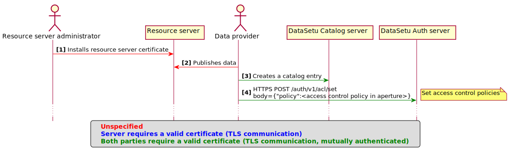
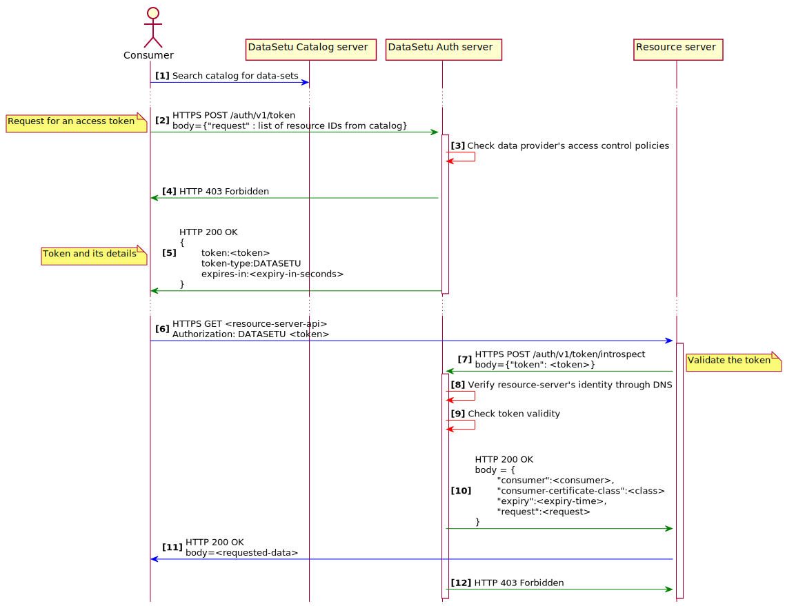

1. Introduction Welcome to the DataSetu Authentication, Authentication, and Accounting (AAA) server. This server serves the DataSetu AAA REST APIs which can be called by: 1. Data providers (the resource owners) 2. Data consumers (client/users who wish to access one or more data provider's data) 3. Resource servers (which hosts the data provider's data) through HTTPS (using a valid client-side X.509 certificate). 2. Setup
[Note] In the above setup, the Resource server administrator and the Data provider may also be the same person. 3. Data access flow
4. APIs The Auth APIs expect the METHOD to be POST. Inputs/outputs if any, are expected to be in JSON. And returns: 1. 200 on success 2. 400 on bad request 3. 403 on unauthorized request On exceptions: 4. 402 on payment required (due to insufficient credits) 5. 429 on too many requests 6. 500 on internal error Below are the list of Auth APIs:
| # | Endpoint | Description | Can be called by | Try it on browser |
|---|---|---|---|---|
| 1 | /auth/v1/token | Request for an access token | Data consumer | link |
| 2 | /auth/v1/acl/set | Set access control polcies | Data provider | link |
| 3 | /auth/v1/acl/revert | Revert to previous access control policy | Data provider | link |
| 4 | /auth/v1/acl/append | Append to existing access control polcies | Data provider | link |
| 5 | /auth/v1/acl | Get the current list of access control policies | Data provider | link |
| 6 | /auth/v1/token/introspect | Verify a token | Resource server | link |
| 7 | /auth/v1/token/revoke | Revoke a list of tokens | Both data providers and consumers | link |
| 8 | /auth/v1/token/revoke-all | Revoke all tokens associated with a certificate | Both data providers and consumers | link |
| 9 | /auth/v1/audit/tokens | Audit tokens | Both data providers and consumers | link |
| 10 | /auth/v1/group/add | Add a consumer to a group | Data provider | link |
| 11 | /auth/v1/group/delete | Delete a consumer from a group | Data provider | link |
| 12 | /auth/v1/group/list | List all valid members of a group | Data provider | link |
| 13 | /auth/v1/certificate-info | Get user's certificate details | Anyone | link |
![[ barun AT iisc DOT ac DOT in ]](bugs.png)